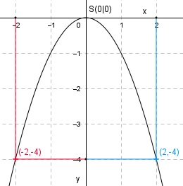

Aufgabe 2 y = - x2 Wertetabelle: x -2 -1 0 1 2 y -4 -1 0 -1 -4 Es ist die nach unten geöffnete Normalparabel, weil die Zahl vor dem x2 negativ (nach unten geöffnet) und dem Betrag nach gleich 1 (Normalparabel) ist. Sie ist symmetrisch zur y-Achse und hat ihren Scheitelpunkt, den höchsten Punkt, bei S(0|0). 